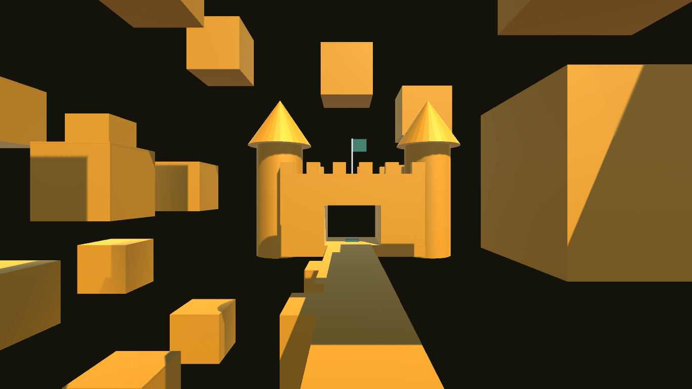
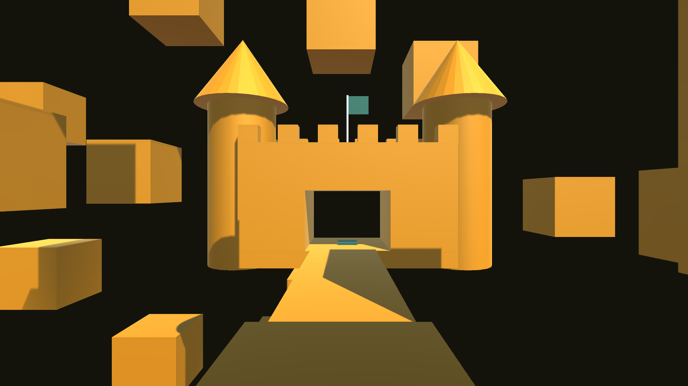

Ball Run is a speedrunning game where you're a ball that's trying to reach the end of the level. This game was made using the Unity game engine.
[W] Forward
[S] Backwards
[A] Left
[D] Right
[Esc] Pause Menu


Your mission is to reach the end of the level (the castle)
CREATOR
altaf-creator
TUTOR
Brackeys
Jonas Tyroller
MUSIC
Background Loop Straight #04 by Zen_Man from Pixabay
Moonlight by Nielizas from Pixabay